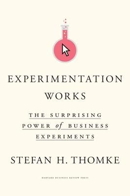
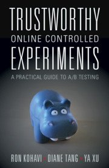
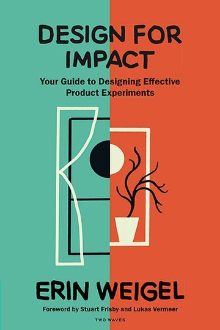
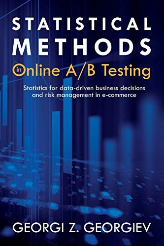
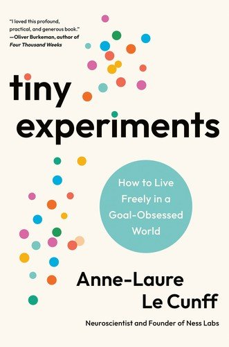
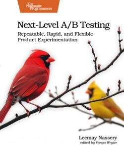
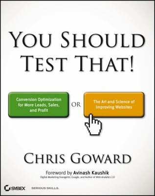
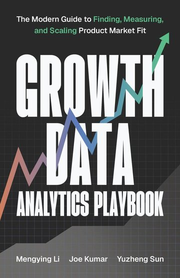
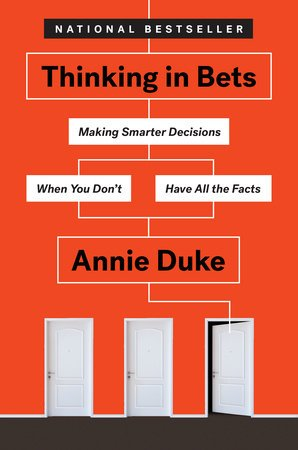

Nine books on experimentation and A/B testing, saved from a LinkedIn reading list. I looked up the table of contents for each so I can decide which ones to read and where to dip in.

Experimentation Works
Experimentation as a management capability, not a testing technique. Written for leaders who want to scale learning instead of opinions.
- Why Experimentation Works
- What Makes a Good Business Experiment?
- How to Experiment Online
- Can Your Culture Handle Large-Scale Experimentation?
- Inside an Experimentation Organization
- Becoming an Experimentation Organization

Trustworthy Online Controlled Experiments
The gold standard for running experiments correctly at scale. Five parts, 23 chapters. Companion site: experimentguide.com.
Part I: Introductory topics for everyone
- Introduction and Motivation
- Running and Analyzing Experiments: An End-to-End Example
- Twyman's Law and Experimentation Trustworthiness
- Experimentation Platform and Culture
Part II: Selected topics for everyone
- Speed Matters: An End-to-End Case Study
- Organizational Metrics
- Metrics for Experimentation and the Overall Evaluation Criterion
- Institutional Memory and Meta-Analysis
- Ethics in Controlled Experiments
Part III: Complementary and alternative techniques
- Complementary Techniques
- Observational Causal Studies
Part IV: Advanced topics for building a platform
- Client-Side Experiments
- Instrumentation
- Choosing a Randomization Unit
- Ramping Experiment Exposure: Trading Off Speed, Quality, and Risk
- Scaling Experiment Analyses
Part V: Advanced topics for analyzing experiments
- The Statistics Behind Online Controlled Experiments
- Variance Estimation and Improved Sensitivity: Pitfalls and Solutions
- The A/A Test
- Triggering for Improved Sensitivity
- Sample Ratio Mismatch and Other Trust-Related Guardrail Metrics
- Leakage and Interference Between Variants
- Measuring Long-Term Treatment Effects

Design for Impact
Bridges UX design and experimentation through her Conversion Design process. The chapters follow the phases of that process.
- Conversion Design Drives Impact
- The Understand Phase: Uncovering Impactful Insights
- The Hypothesize Phase: Think Clear, Logical Thoughts
- The Prioritize Phase: The Work and the Workflow
- The Create Phase: Set Your Idea Up for Success
- The Test Phase: Test Like You're Wrong
- The Analyze Phase: Learn from the Data
- The Decide Phase: Make an Optimal Choice
- Scale It: Drive Impact Across Your Organization

Statistical Methods in Online A/B Testing
The statistics behind experiments, built from the ground up with CRO examples instead of dice and coins.
- Using Statistics in Business
- Estimating Uncertainty: Statistical Significance, P-Values, Other Estimates
- Statistical Assumptions: Assessing Model Adequacy
- Statistical Power and Sample Size Calculations
- Types of Statistical Hypotheses
- Tests with More Than One Variant
- Segmentation and Multiple Performance Indicators
- Working with Continuous Data
- Percentage Change
- Sequential Testing: Continuous Monitoring of Data
- Optimal Significance Thresholds and Sample Sizes
- External Validity, a.k.a. Generalizability of A/B Test Results
- Miscellaneous Topics
- Communicating Statistical Results

Tiny Experiments
A mindset book about learning through small, intentional experiments in your own life. Organized in four parts: Pact, Act, React, Impact.
Pact: commit to curiosity
- Why Goal Setting Is Broken
- Escaping the Tyranny of Purpose
- A Pact to Turn Doubts into Experiments
Act: practice mindful productivity
- A Deeper Sense of Time
- Procrastination Is Not the Enemy
- The Power of Intentional Imperfection
React: collaborate with uncertainty
- Creating Growth Loops
- The Secret to Better Decisions
- How to Dance with Disruption
Impact: grow with the world
- How to Unlock Social Flow
- Learning in Public
- Life Beyond Legacy

Next-Level A/B Testing
What breaks when experimentation matures: throughput, interaction effects, ML evaluation, long-term impact. From a Pragmatic Bookshelf engineering angle.
- Why Experimentation Rate, Quality, and Cost Matter
- Improving Experimentation Throughput
- Designing Better Experiments
- Improving Machine Learning Evaluation Practices
- Verifying and Monitoring Experiments
- Ensuring Trustworthy Insights
- Practicing Adaptive Testing Strategies
- Measuring Long-Term Impact
- Tying It All Together

You Should Test That
A classic on hypothesis-driven conversion optimization, built around his LIFT model.
- Why You Should Test That
- What Is Conversion Optimization?
- Prioritize Testing Opportunities
- Create Hypotheses with the LIFT Model
- Optimize Your Value Proposition
- Optimize for Relevance
- Optimize for Clarity
- Optimize for Anxiety
- Optimize for Distraction
- Optimize for Urgency
- Test Your Hypotheses
- Analyze Your Test Results
- Strategic Marketing Optimization

Growth Data Analytics Playbook
Connects experimentation, metrics, and decision-making for product growth. Published by Statsig.
- Leverage Growth Analytics to Drive Product Success
- Identify Early Signals of Product Value and Success
- Build the Foundation with Growth Accounting Framework
- Acquire and Foster High-Quality Users
- Retain Existing Users and Keep Them Engaged
- Resurrect Churned Customers: Strategies for Reengagement
- Accelerate User Conversion for Increased Revenue Generation
- Optimize Performance and Build Sustainable Growth Flywheels
- Size Growth Opportunity and Set Achievable Growth Goals
- Design and Implement Effective Experiments

Thinking in Bets
Not about A/B testing directly. It is about decision-making under uncertainty, which every experiment ultimately is.
- Life Is Poker, Not Chess
- Wanna Bet?
- Bet to Learn: Fielding the Unfolding Future
- The Buddy System
- Dissent to Win
- Adventures in Mental Time Travel